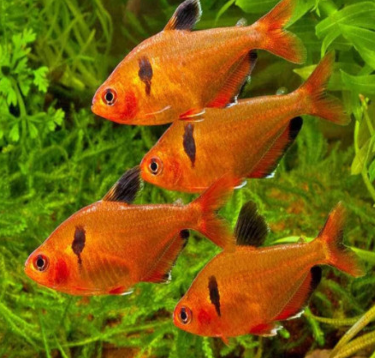

Systématique
- Ordre : Characiformes
- Famille : Characidae
- Genre : Hyphessobrycon
- Espèce : H. eques

Hyphessobrycon eques, très souvent commercialisé sous le nom de Tétra serpae ou Tétra sang, est l'un des characidés les plus colorés et populaires d'Amérique du Sud.
Il mesure adulte entre 3,5 et 4 cm. Son corps, assez haut et comprimé latéralement, affiche une coloration rouge brique à rouge sang intense, particulièrement chez les mâles dominants. Il se distingue par une tache noire en forme de virgule derrière l'opercule (parfois estompée) et une nageoire dorsale majoritairement noire, bordée de blanc à la pointe. La nageoire anale est rouge bordée de noir et de blanc.
C'est un poisson magnifique mais qui possède une réputation de "mordilleur de nageoires" s'il est mal maintenu.
C'est un poisson grégaire qui établit une hiérarchie de groupe parfois houleuse. Il doit impérativement être maintenu en banc d'au moins 10 individus.
En petit groupe (moins de 6-8), il devient stressé et agressif envers les autres habitants, avec une fâcheuse tendance à la ptérygiophagie (morsure des nageoires), ciblant les poissons lents ou à voiles (Guppys, Scalaires, Bettas).
Dans un groupe suffisamment grand et un bac spacieux, l'agressivité se disperse entre eux (parades d'intimidation) et ils laissent généralement les autres espèces tranquilles.
Mode : ovipare.
C'est un diffuseur d'œufs. Le frai a lieu parmi les plantes fines. Les œufs sont non adhésifs et tombent au sol.
Les parents sont de grands consommateurs d'œufs. Pour réussir l'élevage, il est nécessaire d'isoler le couple ou le groupe, de protéger le fond avec une grille ou des billes, et de retirer les adultes juste après la ponte.
Dimorphisme sexuel : Le mâle est généralement plus svelte et d'un rouge plus intense et profond. La femelle est plus ronde (surtout au niveau du ventre), plus haute de corps et sa coloration rouge est souvent un peu plus pâle ou tirant sur l'orangé.
Espérance de vie : Environ 3 à 5 ans, parfois plus.
Il possède une vaste répartition en Amérique du Sud. On le trouve principalement dans le bassin amazonien (Rio Guaporé, Rio Madeira) et le bassin du Rio Paraguay. Il fréquente les eaux calmes, les bras morts (lagunes) et les zones inondées, souvent riches en végétation aquatique.
Répartition

Origine naturelle :
- Brésil (Mato Grosso, Amazonie).
- Paraguay.
- Bolivie.
- Argentine (Nord).
Paramètres de maintenance
Température : 22 à 27 °C.
pH : 5,0 à 7,5 (tolérant, mais préfère l'eau légèrement acide).
GH : 5 à 15 °dGH.
Courant : Faible à modéré.
Volume conseillé : Minimum 80 à 100 L. Bien que petit, son comportement actif et parfois turbulent nécessite de l'espace pour maintenir un banc suffisant et limiter l'agressivité.
Régime alimentaire
Régime : omnivore vorace.
Dans la nature, il se nourrit de vers, de crustacés et de plantes.
En aquarium, il mange tout ce qui passe à sa portée. Pour maintenir sa couleur rouge éclatante, une alimentation variée incluant des proies vivantes ou congelées (vers de vase, daphnies, artémias) et des granulés riches en caroténoïdes est recommandée.